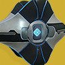
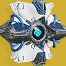
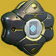
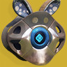

机灵外壳全图鉴Ghost Shell Compendium
收录当前版本全部 — 件机灵外壳（机壳）——守护者伙伴「机灵」的外部装甲。包含异域、传说等全部稀有度，附中英文名称、风味文本与获取来源。数据取自 Bungie 官方 Manifest 公开数据。不了解命运2？先看 30 秒入门指南。
检索与字段结构参考：命运2中文维基 · 物品检索器
什么是「机壳」？
给第一次接触《命运2》的朋友：30 秒搞懂这本图鉴在收藏什么。
在《命运2》的世界里，每位守护者身边都漂浮着一个小小的机械同伴——机灵（Ghost）。它是巨大的白色星球体「旅行者」在「大崩溃」之际，用自己最后的光能碎片创造的智慧造物；每台机灵都在茫茫人海中寻找那个被选中的人，把他从死亡中唤醒，成为手持光能、守护人类的守护者。
而机壳（Ghost Shell），就是机灵的外部装甲——也就是这本图鉴收藏的全部。换壳不会让机灵变强或变弱，但它决定了你家小机灵的气质：棱角分明的军用风格、糖霜水晶的节日限定、赛博霓虹的都市造型……对守护者来说，机灵是永不背叛的伙伴，机壳就是你们共同的个性宣言。
「旅行者在弥留之际创造了机灵……去寻找那些能将它的光化为武器的人——守护者，来保护我们，做旅行者自己已无法做到的事。」

机灵Ghost · 伙伴
光能构成的小型智能体：复活倒下的你、照亮黑暗、破译古锁、扫描敌情、召唤载具……还会在你阵亡时碎碎念。只要它还在，守护者就不会真正死去。

机壳Shell · 外观收藏
机灵的可替换外壳，由多块自由旋转的装甲板包裹着中央的眼睛。自《凌光之刻》资料片起为纯外观道具，加成功能全部移入「机灵模块」系统。

稀有度Rarity · 金紫有别
分为 异域(金)/传说(紫)/稀有(蓝)/罕见(绿)/普通(灰) 五档。本图鉴中异域 409 件、传说 168 件——金光闪闪的多数是 Eververse 上架的装饰品。

获取途径Source · 每壳有故事
大部分来自 Eververse 光尘商店（赛季轮换、用光尘购买）；也有赛季通行证奖励、突袭与地牢的荣耀见证、节日活动限定——比如兔叽机壳只属于曙光节。